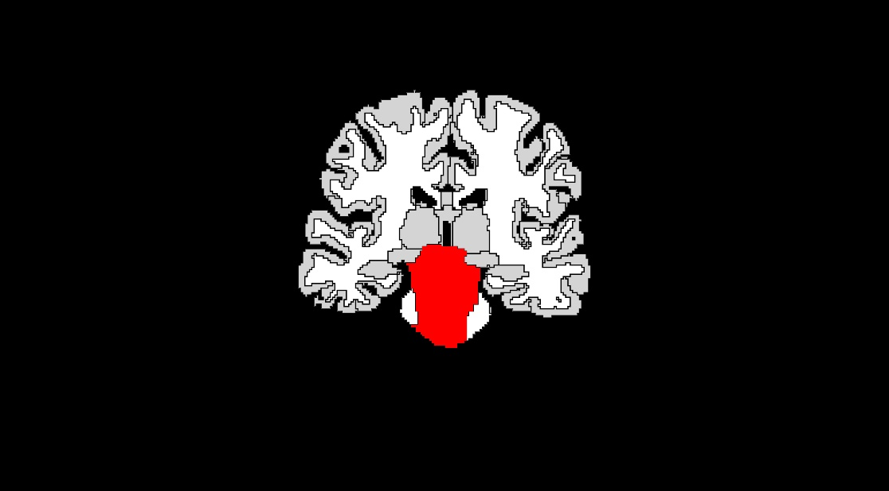
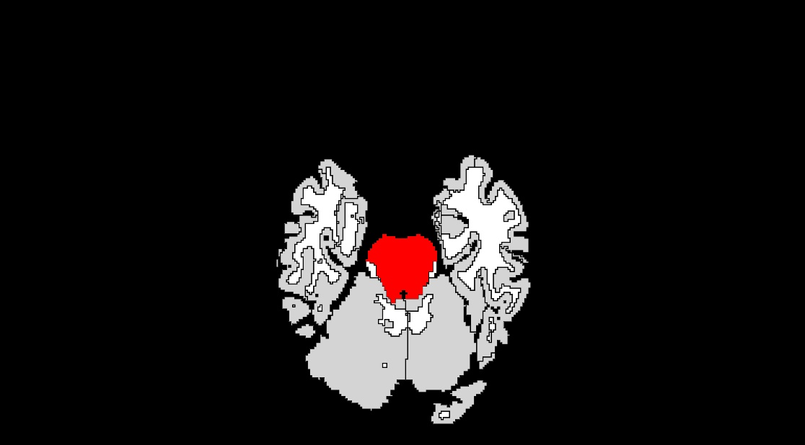
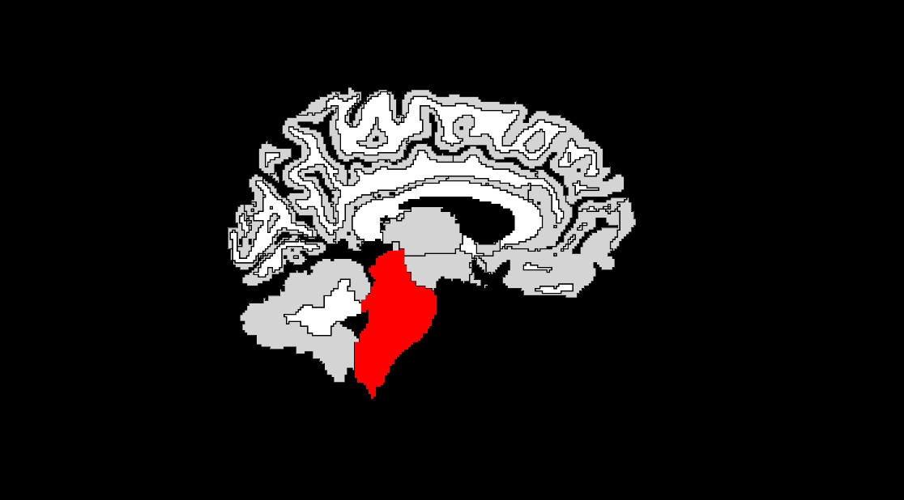

<h3>Brain-Stem -- localization</h3>

<br>
<br>
<br>
<h3>Brain-Stem -- <a href="../../measurebased/FreeSurfer.subcort/volume.html">volume</a></h3>


<h3>Brain-Stem -- <a href="../../measurebased/FreeSurfer.subcort/Elongation.html">elongation</a></h3>


<h3>Brain-Stem -- <a href="../../measurebased/FreeSurfer.subcort/Sphericity.html">sphericity</a></h3>


